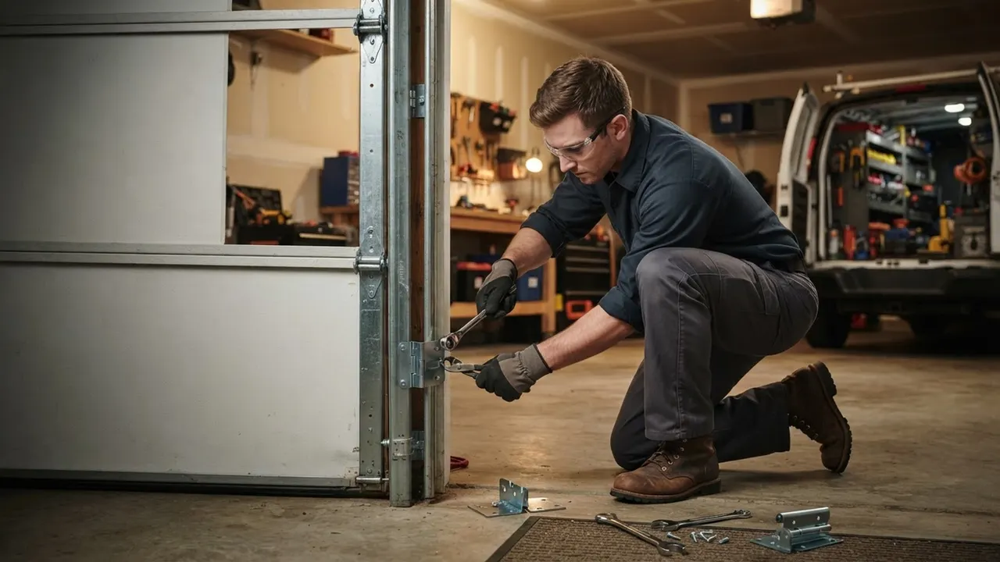

Your local team · The Highlands
Garage Door Repair in The Highlands Done Right the First Time
Garage Door Repair in The Highlands means a broken torsion spring or snapped cable gets handled by a crew that knows these streets, not a call center two counties away. We work the 19806 and 19807 ZIP codes every week, from Highlands North down to Kentmere, and we carry the springs, rollers and openers to finish most jobs in one visit. Call and we will tell you straight what it takes.
Local knowledge
Garage Door Repair in The Highlands, Handled Locally
Garage Door Repair in The Highlands is the work of getting a heavy wooden or steel door moving again on a street where the houses were built long before anyone thought about nylon rollers. We have served this neighborhood since 2010, and our trucks know the difference between a carriage-house door on a Rockford Park-area estate and a standard 16-foot panel on a postwar garage off Kentmere Parkway. That matters, because the parts are not the same and neither is the fix. A snapped galvanized steel cable on a 1920s door needs different handling than a stripped gear in a 2015 LiftMaster opener. We stock torsion springs, extension springs, cable drums, hinges and bottom seals so most repairs finish the same day. When you search for a garage door company The Highlands homeowners actually keep on speed dial, the answer tends to be the crew that shows up with the right spring on the truck.

Services available in The Highlands
Garage Door Repair Services Available in The Highlands
Every service we run in The Highlands starts with the same question: what is actually wrong with the door? A door that will not open is not always a broken spring, and a door that will not close is not always a bad sensor. We diagnose before we quote, which is why homeowners searching for Garage Door Repair in The Highlands near me usually get a straight answer on the first call instead of a parts list. From a single hinge replacement in Westover Hills to a full custom door install near the Delaware Art Museum, we handle the whole range.
01
Garage Door Repair
General repair calls in The Highlands usually trace back to a torsion spring, a frayed cable or a bent track. We diagnose on arrival, quote before we start, and carry the common parts for both older wooden doors and modern steel panels. Most single-issue repairs finish in one visit.
View service 02Garage Door Installation
New door installs in The Highlands often mean matching a carriage-style look on an estate home or a clean modern panel on a renovated garage. We measure the opening, check the header and jambs, and set the track so the door runs true from day one. Old door haul-away is included.
View service 03Garage Door Opener Repair
Opener failures in The Highlands range from a dead logic board to stripped gears in an older Craftsman unit. We test the motor, the travel limits and the safety reverse before recommending a repair or replacement. LiftMaster and Chamberlain parts are on the truck for most same-day fixes.
View service 04Garage Door Opener Installation
We install belt-drive and chain-drive openers across The Highlands, including smart models with phone control and battery backup. Belt drives are the popular choice on homes where a bedroom sits above the garage. We set the force limits and test the safety reverse before we leave.
View service 05Garage Door Spring Repair
Torsion spring replacement is our most common The Highlands call. We match wire gauge and cycle life to the door weight, use proper winding bars, and never reuse a fatigued spring on the other side. A standard two-spring replacement runs about two hours.
View service 06Garage Door Cable Repair
Snapped galvanized steel cables usually mean the door is hanging crooked or jammed in the track. We replace both cables as a pair, inspect the cable drums for wear, and reset the tension. Driving on a broken cable bends panels fast, so this is a same-day priority.
View serviceBuilt around the city
How We Execute Garage Door Repair in The Highlands
Garage Door Repair The Highlands jobs start with a phone call that gets you a real arrival window, not a four-hour block. Our trucks carry torsion springs in the common wire gauges, galvanized steel cables, nylon and steel rollers, hinges, bottom seals and a range of LiftMaster and Chamberlain openers, so most calls finish on the first visit. On arrival we clamp the door with vise grips, check the spring tension with winding bars, and inspect the track brackets and cable drums before we quote. Older estate homes near Rockford Park often need a longer diagnosis because the original hardware has been modified over the decades. Newer homes in Highlands South are usually a straight spring or opener swap. We test the safety reverse against the UL 325 standard before we pack up, and we leave the door moving smoothly by hand. If you need 24/7 garage door repair The Highlands DE residents can count on during a storm outage, we run those calls every night of the week.
Leaves, twigs and seed pods collect in the vertical and horizontal track on streets around Rockford Park and Kentmere Parkway. That grit grinds the rollers and makes the door drag, which shortens opener life and causes the door to bind halfway up. We vacuum the track, replace flat-spotted rollers, and lubricate the hinges and bearings with a non-gumming lubricant. On homes with heavy canopy cover we recommend a fall tune-up so the debris never gets a chance to work into the rollers.
Wilmington swings above and below freezing repeatedly from December through March. The slab and the door frame move at different rates, which throws the track out of plumb and can leave the bottom seal gapping. Doors that ran fine in November start binding in January. We reset the track brackets, adjust the vertical track for plumb, and check the door-to-floor contact. On doors with a worn bottom seal we replace it so the gap does not let cold air and moisture into the garage.
Some Highlands North and Rockford Park-area homes still have the original wooden carriage doors or early sectional hardware. Standard modern springs and brackets do not always fit without modification, and the wrong part can crack a century-old panel. We measure the door weight and the existing hardware before quoting, and we source springs and brackets sized for the actual load. When a panel is too fragile for a standard bracket, we reinforce the mounting rather than drill new holes into the wood.
Every opener we install or repair in The Highlands gets tested against UL 325, which requires the safety reverse and the photo-eye to function. If your door does not reverse on contact with an object, it fails the standard and needs adjustment before it is safe to run.
This standard covers door construction, labeling and installation requirements. We follow it on every new install and on any repair that changes the door weight or the spring configuration, so the door you end up with is built to the same spec as a factory install.
Opener circuits and any new wiring we run in a The Highlands garage get installed to NEC requirements, including proper grounding and GFCI protection where the circuit serves a garage. It matters at inspection time and it matters for safety.
Common local problems
Common Garage Door Problems in The Highlands
Broken torsion spring on heavy wooden doors
Door off track after a freeze-thaw cycle
Opener motor failure after years of drag
Sensor misalignment from sun glare and debris
Warning signs
Signs You Need Garage Door Repair in The Highlands
This is almost always a sensor misalignment or a photo-eye blocked by debris. It is a safety feature working as designed, but a door that will not close is a security problem. We realign the eyes and test the reverse against UL 325.
That bang is usually a torsion spring breaking. The door becomes very heavy and dangerous to lift by hand. Stop using the opener and call us. A snapped spring is a same-day repair and we carry the common sizes on the truck.
A crooked door usually means a snapped galvanized steel cable or a cable that has jumped the drum. Running the opener in this condition bends panels and can drop the door. This is an emergency call, not a wait-and-see.
Grinding usually points to worn steel rollers, dry hinges or a bearing that has lost its grease. Left alone, the extra drag wears out the opener motor. A roller and hinge replacement is a quick fix that adds years to the opener.
A door that moves slowly is fighting something: a stiff spring, a binding track or a worn roller. The opener is doing more work than it should. We check the spring tension and the track first, because a new opener on a stiff door will fail the same way.
Pricing and expectations
Garage Door Repair Pricing in The Highlands
Typical 2026 pricing for Garage Door Repair in The Highlands runs from about $180 for a simple roller or hinge swap to $650 or more for a two-spring torsion replacement with new cables. A standard torsion spring replacement is usually $280 to $450 depending on door weight and spring cycle life. Opener repairs run $150 to $350, and a full opener replacement with a belt-drive LiftMaster or Chamberlain unit is $450 to $850 installed. Custom carriage-style door installs are quoted per project and depend on the door profile and hardware. We quote before we start, and the number on the invoice matches the number on the quote. If a repair is not worth the money, we will tell you that too.
Heavier wooden carriage doors in Highlands North need higher-cycle springs and heavier-gauge wire, which costs more than a standard steel-door spring. The spring has to match the door weight or it will fail early.
Common LiftMaster, Chamberlain and Genie parts are on the truck and priced at standard rates. Specialty or discontinued parts for older doors may need to be ordered, which adds a day or two and sometimes a small sourcing premium.
Standard business-hour calls are priced at our regular rate. After-hours and weekend emergency calls carry a higher rate because a tech is dispatched outside normal hours. We tell you the rate on the phone before we roll.
We know the route
Navigating The Highlands: Landmarks We Use
The Highlands is easy to find and easy to get turned around in once you leave the main parkways. Our technicians use the neighborhood's landmarks as orientation points so we can give you an accurate arrival window and find the right driveway on the first pass. If you are giving us directions, mention the nearest landmark and we will know exactly where you are.
Rockford Park
Rockford Park sits at the center of the neighborhood and is the easiest orientation point for calls in Highlands North and the streets that ring the park. If you are near the park, we know which side of the neighborhood you are on.
Delaware Art Museum
The Delaware Art Museum anchors the Kentmere Parkway side of The Highlands. We use it as the reference point for calls on the streets between the museum and Kentmere, which helps us route the truck without a wrong turn.
Highlands Elementary School
Highlands Elementary School is a reliable landmark for the residential streets on the south side of the neighborhood. During school hours we plan around drop-off and pickup traffic so we are not blocking a driveway at the wrong time.
Kentmere Parkway
Kentmere Parkway is the main artery through this part of Wilmington and the route our trucks use to reach most Highlands addresses. Knowing which end of the parkway you are on tells us whether to approach from the north or the south.
Tower Hill School
Tower Hill School sits just outside the neighborhood and is a useful reference for calls on the western edge of The Highlands. If you mention Tower Hill, we know you are on the side closest to the school's campus.
Kentmere corridor
The Kentmere corridor includes small professional offices and service businesses that rely on roll-up and sectional doors for daily operations. We service commercial operators, springs and tracks here and prioritize business-hour outages so a door down does not shut down the workday.
The Highlands service coverage
Neighborhoods We Serve in The Highlands
The Highlands is not one uniform neighborhood, and we do not treat it like one. The housing stock, the driveway layouts and the door types change block by block, and knowing that saves you time and money on the repair. Here is how we cover the four areas we work most.
Highlands NorthHighlands SouthRockford Park areaKentmere
Delaware Express Garage Door Service3601 Old Capitol Trl A5, Wilmington, DE 19808, United States, Wilmington, Delaware
Local results
Recent Garage Door Repair Jobs in The Highlands
A homeowner in Highlands North called on a Sunday evening with a door stuck half-open. The torsion spring had snapped and the door was hanging on the cables.
We clamped the door, replaced both torsion springs with a matched pair sized for the door weight, and checked the cable drums and rollers for wear. The opener was tested against UL 325 before we left. Door was back in service the same evening. Total on-site time was just under two hours, and the homeowner avoided an overnight security risk.
A Kentmere professional office had a commercial roll-up door that would not close, blocking the loading area during business hours.
We traced the fault to a misaligned photo-eye and a worn bottom seal that was tripping the safety reverse. We realigned the sensors, replaced the seal, and tested the full cycle with the operator. Door was operational within 90 minutes of arrival, and the office did not lose a day of loading. We scheduled a follow-up tune-up for the operator.
A homeowner near Rockford Park had a wooden carriage-style door that was binding and making a grinding noise on every cycle.
We found flat-spotted steel rollers and a bent track bracket from a prior bump. We replaced the roller set, straightened the track, replaced the bracket, and lubricated the hinges and bearings. The door ran quietly and smoothly on the first test cycle. The homeowner reported the opener no longer strained, which should extend its life.
Notes from local customers
What The Highlands Customers Say
Our torsion spring snapped on a Friday night and the door was stuck open. Delaware Express had a tech out Saturday morning, and he replaced both springs, checked the cables and reset the opener. He quoted the price before he started and it matched the invoice. We have used them twice now and will keep their number.
Called about a door that would reverse halfway down. Turned out to be a misaligned sensor and a worn bottom seal. The tech realigned the eyes, replaced the seal, and tested the safety reverse before he left. Took about an hour and the price was fair. Good to have a local crew that knows these older doors.
We had a wooden carriage door that was binding and noisy. The tech replaced the rollers, straightened a bent track bracket, and lubricated everything. The door is quiet now and the opener does not strain. He also pointed out a hinge that will need replacing in a year or two, which I appreciated.
Plan for the season
How Seasons Affect Garage Door Repair in The Highlands
Book a tune-up in March or April to reset the track, clean the rollers and check the spring tension before the summer heat. It is the cheapest time of year to catch a problem.
Keep the tracks clean and lubricated, and check the sensor alignment if the door starts reversing. If the opener is more than 10 years old, have the motor and gears checked before the fall rush.
Clear the tracks every couple of weeks during leaf drop, and replace a worn bottom seal before the first freeze. A fall tune-up now prevents most of the winter emergency calls.
Lubricate the hinges, rollers and bearings with a cold-weather lubricant before the first freeze. If the door sounds different in the cold, have it checked before it fails on a Sunday night.
Nearby service areas
Nearby Cities We Serve From The Highlands
The Highlands sits in the middle of our Wilmington service area, which means we can reach most of the surrounding neighborhoods on the same run. If you are just outside The Highlands, we probably cover your street too. Here are the nearby areas we serve most often.
Before you hire
What to Ask Before Hiring a Garage Door Repair in The Highlands
Do you carry the springs and parts for my door on the truck?
Will you quote the price before you start the work?
Are you licensed and insured to work in Delaware?
Do you test the safety reverse before you leave?
How long have you been working in The Highlands?
Trust and compliance
Licensed, Insured and Code-Correct
Delaware contractor license
State-licensed garage door contractor
DASMA certification
Door and Access Systems Manufacturers Association
IDEA certification
Institute of Door Dealer Education and Accreditation
OSHA safety compliance
Occupational Safety and Health Administration
Wilmington Chamber of Commerce
member
Delaware Small Business Alliance
member
Most repairs in The Highlands run $180 to $450 in 2026, with a standard torsion spring replacement at $280 to $450 and an opener repair at $150 to $350. A full opener replacement with a belt-drive LiftMaster or Chamberlain unit is $450 to $850 installed. We quote before we start, and the invoice matches the quote.
The best crew is the one that works these streets every week and carries the parts for your door on the truck. We have served The Highlands since 2010, run the 19806 and 19807 ZIP codes daily, and stock torsion springs, cables, rollers and LiftMaster and Chamberlain openers. Call (302) 556-5080 and we will tell you straight what the job takes.
Yes. We run emergency calls around the clock for doors stuck open, snapped cables and doors jammed in the track. Overnight and weekend calls carry a higher rate than business-hour service, and we tell you the rate on the phone before we dispatch a tech. Most overnight calls in The Highlands get a tech on-site within two hours.
Yes, for most calls placed before early afternoon. We keep common springs, cables, rollers and openers on the truck, so the first visit is usually the only visit. If a specialty part is needed for an older or custom door, we tell you on the call and schedule the return trip.
We cover all of The Highlands, including Highlands North, Highlands South, the Rockford Park area and Kentmere, plus the surrounding Wilmington neighborhoods in New Castle County. If you are near Kentmere Parkway, Rockford Park or the Delaware Art Museum, you are on our regular route. Call and we will confirm your address.
Your next step is waiting
Get Garage Door Repair in The Highlands Today
If your door is stuck, noisy or slow, we can be on-site in The Highlands today. We have served this neighborhood since 2010, we carry the springs, cables and openers for the doors on these streets, and we quote before we start. Call (302) 556-5080 and we will give you a real arrival window, not a four-hour block. Same-day service is available on most calls placed before early afternoon, and emergency service runs 24/7 for doors stuck open or jammed in the track.
Start with the basics
Call For Garage Door Service
Call (302) 556-5080 and tell us what your door is doing. We answer during business hours and run emergency calls after hours. Most days we can get a tech to you the same day, and we will give you a window, not a maybe.